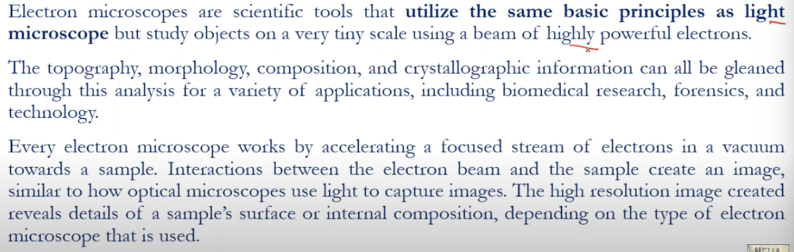
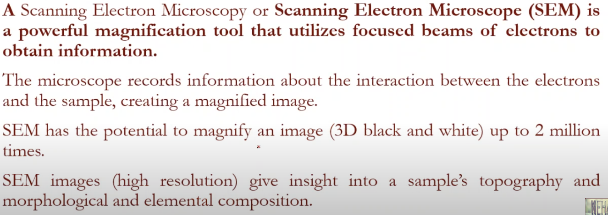

Electron microscope
- 
- utilize the same basic principles as light microscope
- topography, morphology, composition and crystallographic information can be obtained throgh this analysis for a variety of applications
- works by accelerating a focused stream of electrons in a vaccume towards a sample.
- high resolution image reveals details of a sample's surface or internal composition.
TEM (Transmission Electron Microscope)
Enables examination of internal structure

- utilizes energetic electrons to provide :
- morphological
- compositional
- crystallographic information
- max potential magnification of 1 nanometer
- high resolution 2D image
- application in educational, scienece and industry.

- sample is in between the coils and while in the sem the sample will be at the bottom of the coils
- parts :
- electron source
- anode
- condensor lenses
- sample
- objective lens
- intermediate lens
- projector lens
- flurescent screen
SEM (Scanning Electron Microscope) (Sem - Surface)

Scans the surface of material
- utilized focused beams of electrons to obtain information
- interaction between the electrons and the sample
- magnify 3D image upto 2 million times.
give insight into sample's :
- topology
- morphological
- elemental composition.


{kind=link}